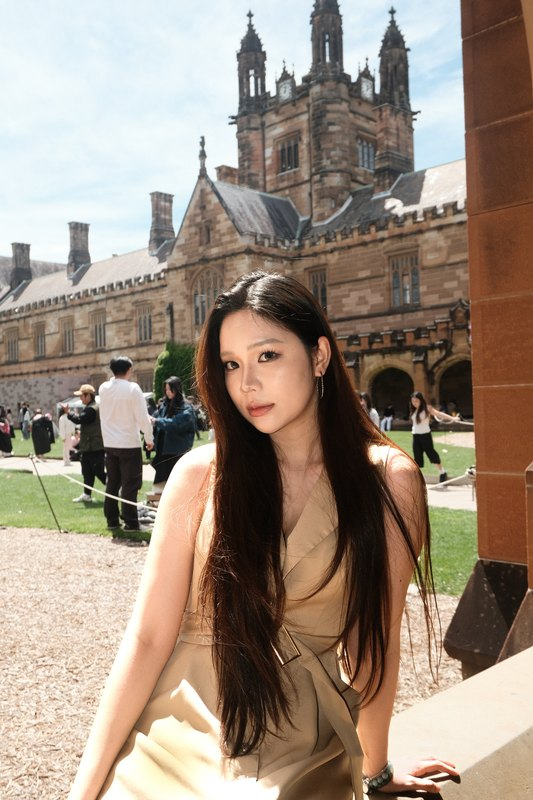

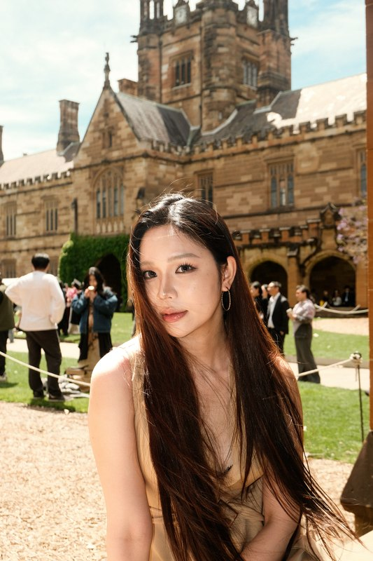

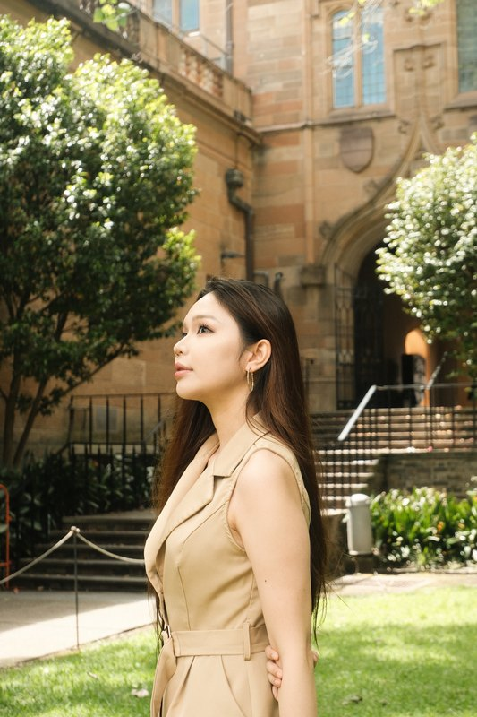

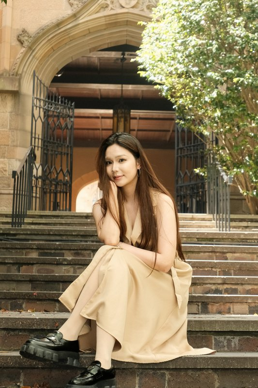


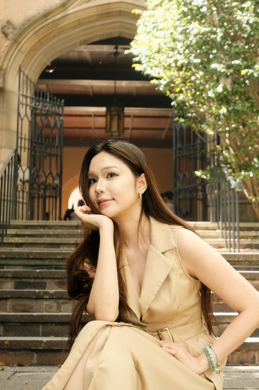

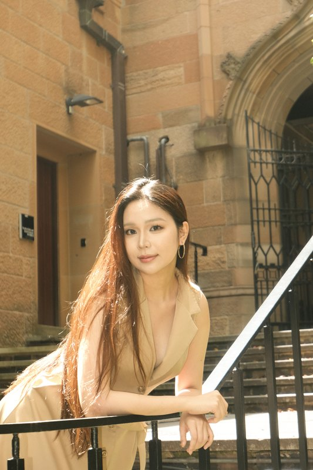

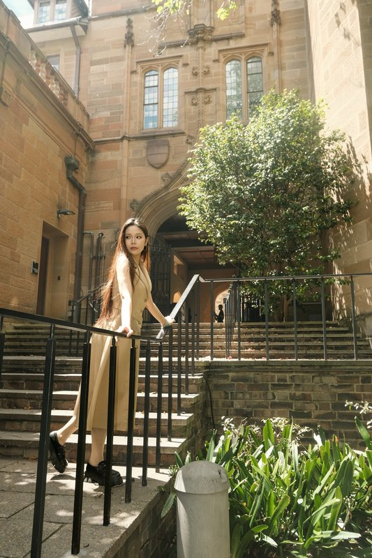

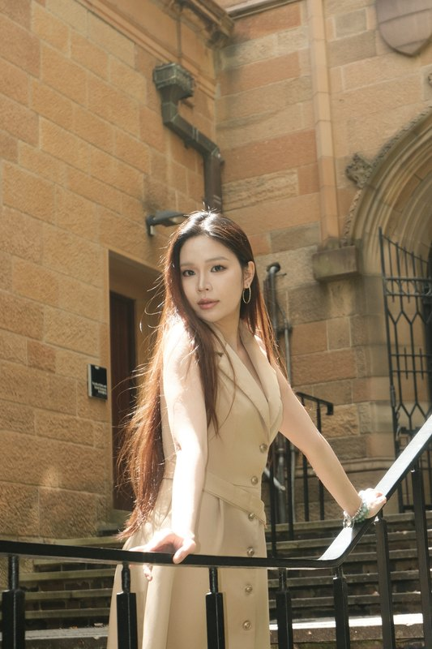

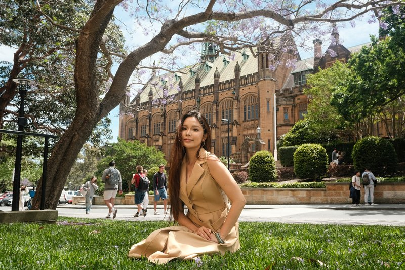

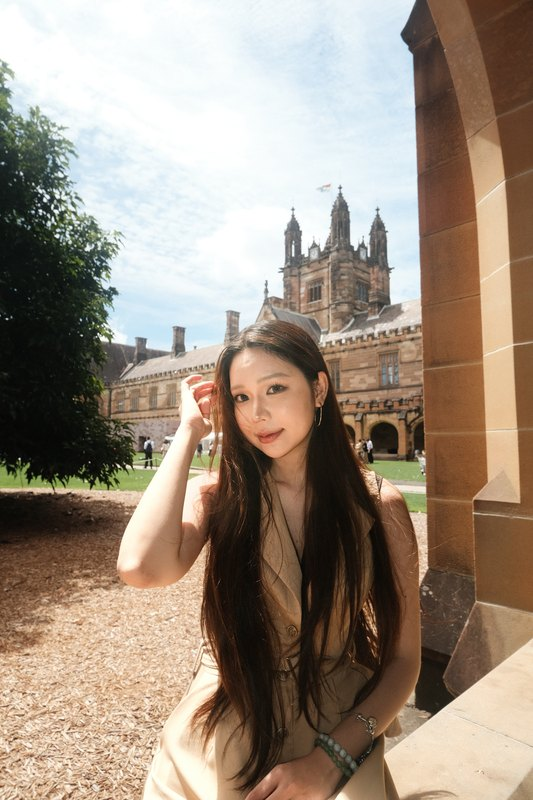

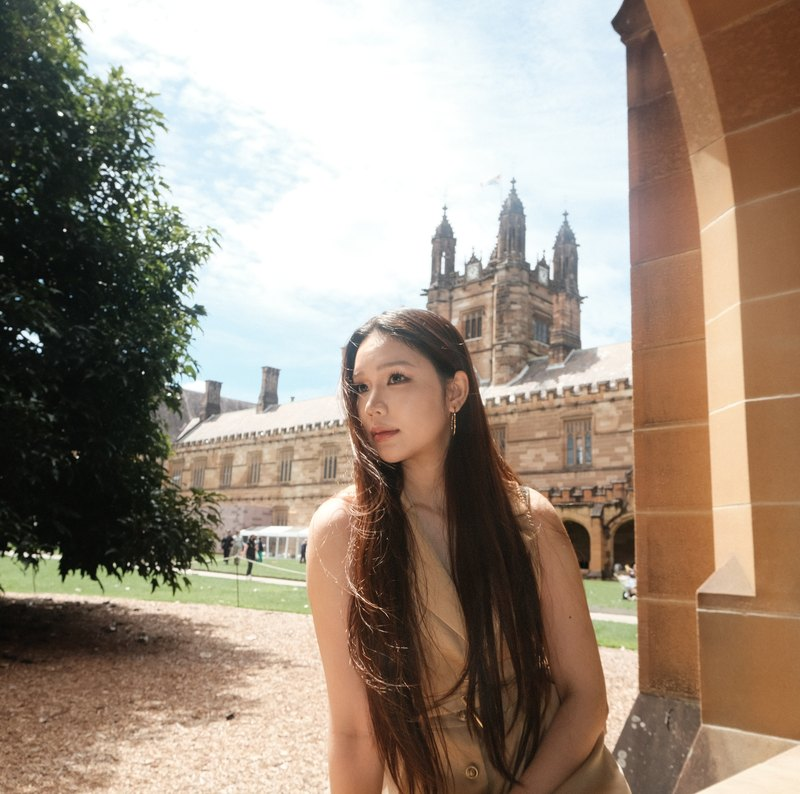

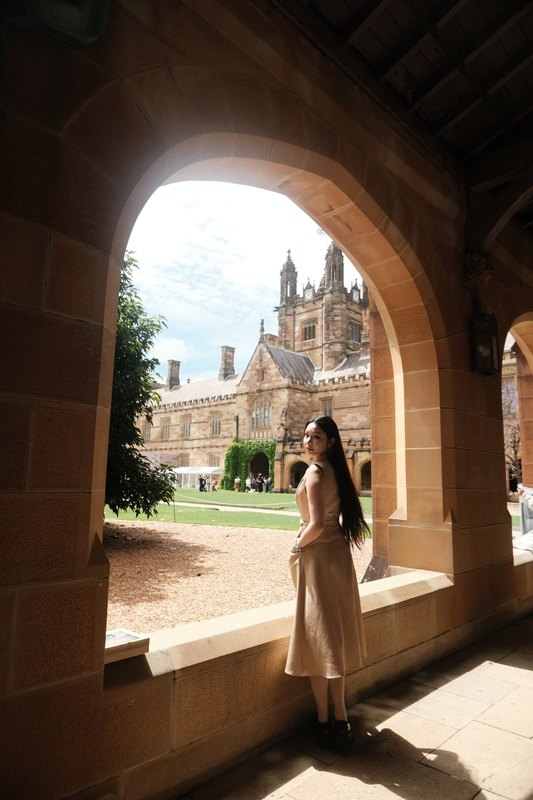

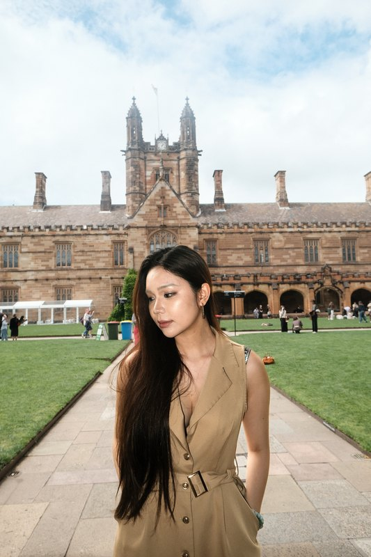

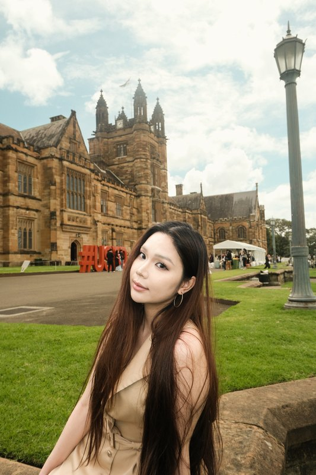
Portrait · Album 06 / 13
A styled portrait session around the Quad: the arches, the stairs, the lawn and a lot of afternoon sun. These are my own colour edits.














 Next albumGraduation at USydUniversity of Sydney · 2026 · 8 photos
Next albumGraduation at USydUniversity of Sydney · 2026 · 8 photos
Want photos like these? DM me on Instagram or call 0490 324 875.